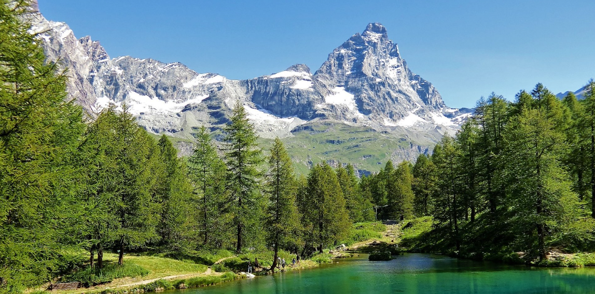
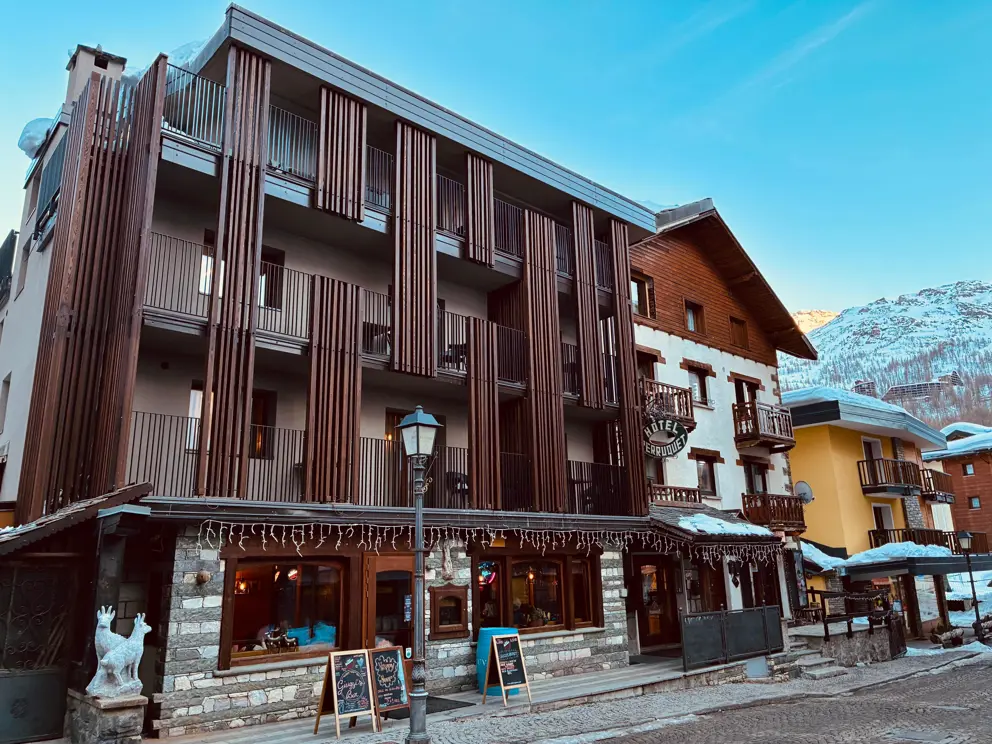

Fredag 18. September
Dag 1: Inn i Aostadalen & Matterhorns fot
Vi lander i Bergamo, henter bilen og setter snuten rett mot de mektigste fjellene i Europa. Målet er Breuil-Cervinia, klemt innunder ikoniske Matterhorn.
📍 Åpne Dagens Kjørerute i Maps-appen🚗 Etappen (225 km) & Logistikk
- Sett GPS på Les Péréquettés, Cervinia. Turen tar ca 2t 45m.
- Kjør A4 mot Milano, bytt til A5 Torino/Aosta. Trekk billett i bommen.
- Avkjøring skjer ved Châtillon/Saint-Vincent. Følg blå skilt mot Cervinia.
⛰️ Severdigheter & Utflukter
- Forte di Bard: Et enormt festningsverk på vei opp dalen. Man kan ta glassheiser gratis opp fjellveggen for panorama.
- Lago Blu (Lac Bleu): Fotostopp Parker i veikanten 2 km før hotellet. Gå den korte ruten til tjernet hvor Matterhorn speiler seg i vannet.
- Plateau Rosa: Hvis ankomsten er tidlig: Ta taubanen til isbreen på 3480 moh og se over til Sveits.

🍝 Restauranter & Gastronomi
- Lunsj (på farten): Pasticceria L'Etoile i Cervinia for fersk focaccia og espresso.
- Middag (Alpe-Gourmet): Wood Restaurant Eksklusivt. Nordisk-inspirert mat med lokale råvarer.
- Middag (Klassisk): Ristorante Al Solito Posto. Hit drar vi for en rykende varm ostefondue (Fonduta valdostana) med lokal vin foran peisen.
- Middag (Pizzakos): Copa Pan. Avslappet stemning med knallgod steinovnspizza og lokalt øl.